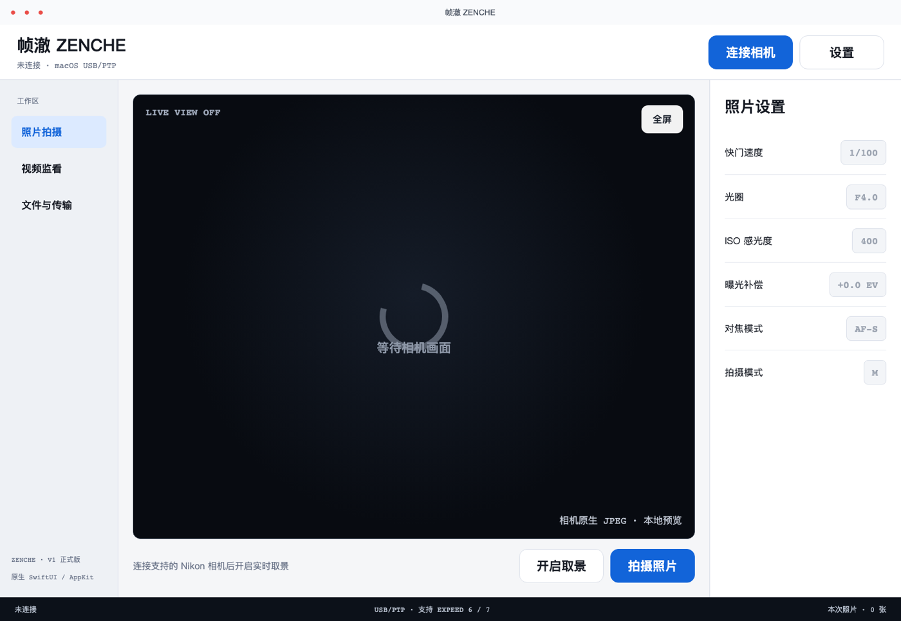
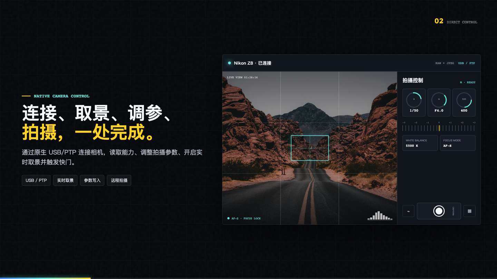
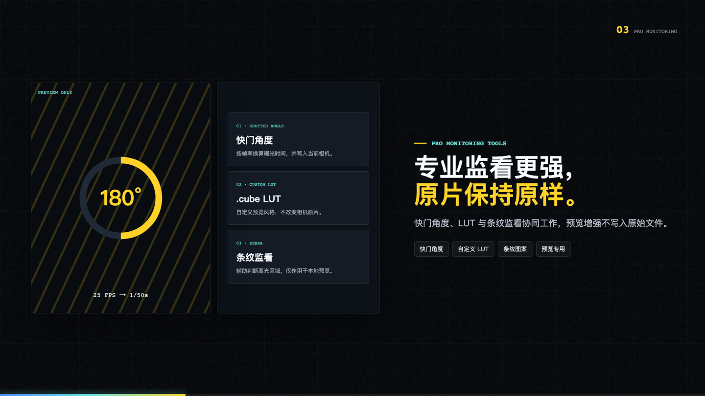
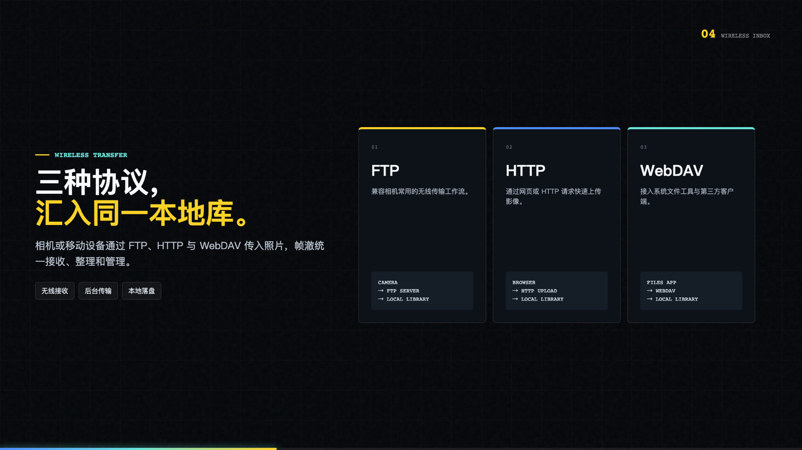
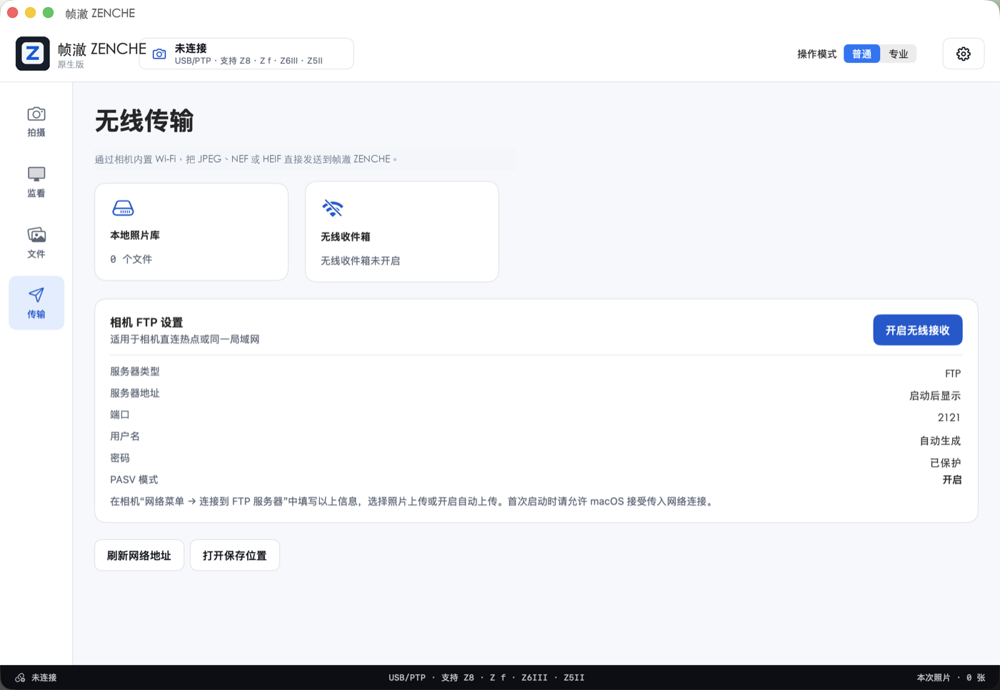

CROSS-PLATFORM CAMERA WORKFLOW
连接相机，连接完整工作流。
从 USB / PTP 取景与控制，到 FTP、HTTP、WebDAV 收图，再到本地整理与非破坏性显影。帧澈把拍摄现场和后续工作放在同一个节奏里。
帧澈 ZENCHE · NATIVE CONTROL

USB / PTP直接连接相机
CAPTURE现场到文件库
向下查看完整工作流
A TOOL FOR THE WHOLE SET
拍下的每一帧，都应该顺利抵达。
帧澈是开源、本地优先的相机工作流工具。它不把你的影像送进陌生的云端，也不要求你在不同应用之间来回切换。
THE WORKFLOW
从拍摄现场，
一路到成片。
一套原生应用，覆盖拍摄、监看、传输、整理与显影。每一个环节都保留清晰的下一步。
CAPTURE / 01
连接，取景，按下快门。
通过原生 USB / PTP 连接 Nikon 相机，读取能力、调整拍摄参数、开启实时取景并触发快门。
- 快门、光圈、ISO、曝光补偿
- 对焦模式、白平衡、Picture Control
- 间隔拍摄、曝光包围、焦点包围与 B 门计时

MONITOR / 02
专业监看更强，原片保持原样。
把快门角度、直方图、波形、矢量示波器、峰值对焦、假色、条纹图案和自定义 3D LUT 放进同一块画面。
- 快门角度换算
- RGB 直方图、波形与矢量示波器
- 预览增强不修改相机设置或原片

TRANSFER / 03
三种协议，汇入同一本地库。
相机或移动设备通过 FTP、HTTP 与 WebDAV 传入照片，帧澈统一接收、整理和管理。
- FTP / PASV 相机收图
- HTTP PUT / POST 快速上传
- WebDAV 接入系统文件工具

FLOW / 04
整理、显影，再把选择交给你。
在同一个项目会话里完成树状分支、拖拽归类、RAW + JPEG 配对、XMP 评级、双目标备份与非破坏性高质量副本。
- 项目会话、命名模板与 SHA-256
- 五组显影参数与透明预设
- 原始文件永不被覆盖
CAMERA PROFILES
从 D500 到 ZR，准备好连接。
项目内置 20 款 Nikon EXPEED 5 / 6 / 7 机型的 USB / PTP 档案。档案代表应用能正确识别设备与参数范围，不等同于所有固件、镜头和主机组合都已完成实机验证。
查看实机验收清单↗EXPEED 5D500 · D7500 · D850
EXPEED 6Z7 · Z6 · Z50 · D780 · D6 · Z5 · Z7II · Z6II · Z fc · Z30
EXPEED 7Z9 · Z8 · Z f · Z6III · Z50II · Z5II · ZR
Nikon USB Vendor ID · 0x04b0
OPEN SOURCE
工具应该站在你这边。
帧澈以本地优先、开源和可验证为基础。查看源码、版本记录、安全策略和贡献方式，了解它如何工作。
访问 GitHub↗